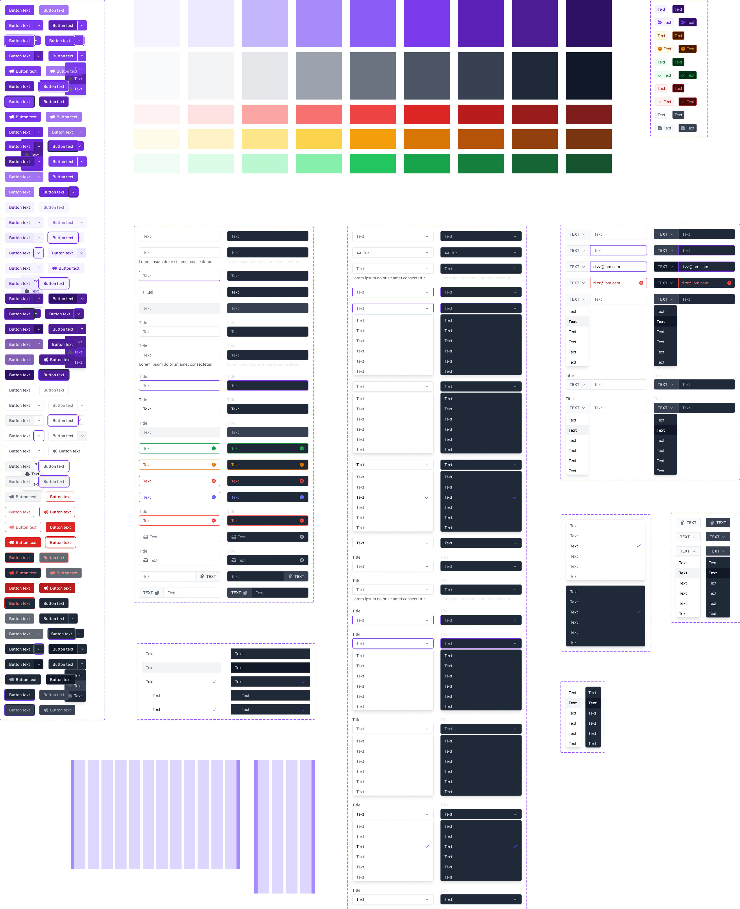

Mark
Desktop Application
Mark is an AI-powered marking assistant that helps both authors and students in the assignment creation and completion process.
YADS
Design System

YADS (Yet Another Design System). A design system is nothing new. A design system for the IBM Skills Network team on the other hand, is completely new.
here:after
Mobile Application

A journaling application designed to support young adults in documenting their emotions and reflecting on past experiences. Here:after helps you reflect HERE, and think about it AFTER.